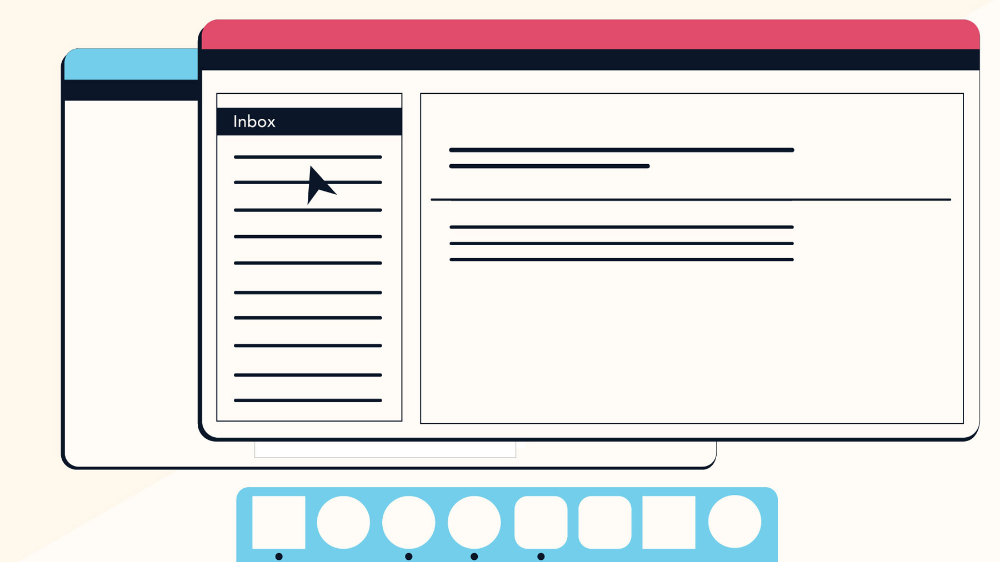

You may have heard people talking about using a program, an application, or an app. But what exactly does that mean? Simply put, an app is a type of software that allows you to perform specific tasks. Applications for desktop or laptop computers are sometimes called desktop applications, while those for mobile devices are called mobile apps.
When you open an application, it runs inside the operating system until you close it. Most of the time, you will have more than one application open at the same time, which is known as multi-tasking.
App is a common term for an application, especially for simple applications that can be downloaded inexpensively or even for free. Many apps are also available for mobile devices and even some TVs.
There are countless desktop applications, and they fall into several categories. Some are more full featured (like Microsoft Word ), while others may only do one or two things (like a clock or calendar app). Below are just a few types of applications you might use.
> Word processors: A word processor allows you to write a letter, design a flyer, and create many other types of documents. The most well-known word processor is Microsoft Word.
> Web browsers: A web browser is the tool you use to access the Internet. Most computers come with a web browser pre-installed, but you can also download a different one if you prefer. Examples of browsers include Internet Explorer, Mozilla Firefox, Google Chrome, and Safari.
> Media players: If you want to listen to MP3s or watch movies you've downloaded, you'll need to use a media player. Windows Media Player and iTunes are popular media players.
> Games: There are many types of games you can play on your computer. They range from card games like Solitaire to action games like Halo. Many action games require a lot of computing power, so they may not work unless you have a newer computer.
Desktop and laptop computers aren't the only devices that can run applications. You can also download apps for mobile devices like smartphones and tablets. Here are a few examples of mobile apps.
> Gmail: You can use the Gmail app to easily view and send emails from your mobile device. It's available for Android and iOS devices.
> Instagram: You can use Instagram to quickly share photos with your friends and family. It's available for Android and iOS.
> Duolingo: With a combination of quizzes, games, and other activities, this app can help you learn new languages. It's available for Android and iOS.
Every computer and mobile device will come with some applications already built in, such as a web browser and media player. However, you can also purchase and install new apps to add more functionality. You can review our lessons on Installing Software on Your Windows PC, Installing Software on Your Mac, and Free Software to learn more.